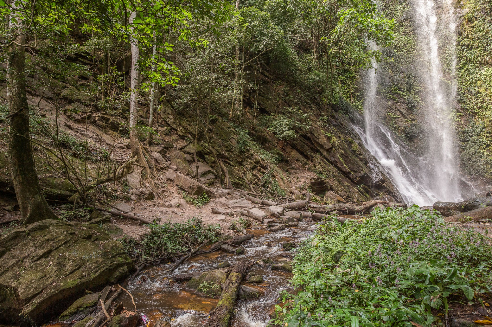

Trending Places
These are the top four tourist sites recommended by visitors that you'll love to visit with exotic and luxurious lodging facilities

Yankari National Park
Yankari National Park is a large wildlife park located in the south-central part of Bauchi State, in northeastern Nigeria.

Erin-Ijesha Waterfalls
It is a tourist attraction located in Oriade local government area, Osun State, Nigeria.